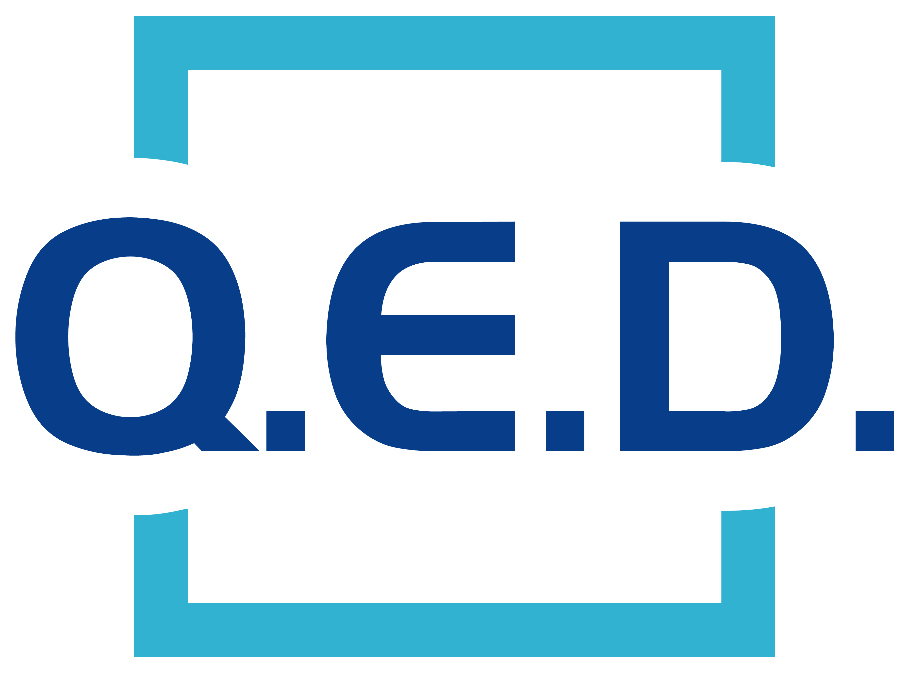

Experience
DH Pace Company, Inc.
Full-time · 2 yrs 3 mos · Olathe, Kansas · Hybrid
Systems Analyst
Nov 2024 - Present · 1 yr 8 mos
- Built and own PaceX, DH Pace's internal enterprise application platform on Oracle APEX, serving 40+ apps used by 300+ employees
- Translated messy, manual business processes into scalable internal tools by working directly with stakeholders to scope requirements and design the solution
- Drove PaceX's evolution from disconnected standalone apps into a unified platform, introducing a centralized hub and reusable development patterns that cut new-app build time
- Architected and shipped internal applications with React + TypeScript (MUI) on an ORDS REST API backend, owning the full stack from database to UI
- Built a reusable frontend template framework that accelerated new-app delivery and enforced consistent UI/UX across the platform
- Engineered workflow-driven features — approvals, notifications, file uploads, and role-based access control — powering the platform's core business logic
- Wrote the backend services and business logic in PL/SQL, handling secure, efficient data processing across applications
- Designed normalized database schemas and data workflows built for scale and long-term maintainability
- Established testing protocols and release processes with QA to ship stable production deployments
- Designed and maintained data integration workflows connecting enterprise systems through Oracle Integration Cloud (OIC), automating data movement and reducing manual processing steps
- Established CI/CD pipelines using GitHub Actions to manage build, test, and deployment across environments, following SDLC and DevOps practices with version control in Git
- Developed PL/SQL routines to ingest, validate, and transform data across sources, ensuring accuracy and reliability for downstream applications and reporting
- Monitored system health and troubleshot production data and workflow failures, diagnosing root causes and tuning processes to proactively prevent recurring issues
Business Analyst - Support
Apr 2024 - Nov 2024 · 8 mos
- Developed a new internal platform called PaceX for applications and forms in Oracle APEX
- Collaborated with users and stakeholders to gather requirements for each application
- Led frontend development with HTML/CSS/JavaScript, optimizing user interface and experience
- Implemented robust backend with PL/SQL, ensuring efficient data management and processing
- Worked with teammates to develop solutions to data pipeline problems
- Built a Tableau Prep Flow to engineer the datasets
- Used Alteryx to create a white label dataset
- Developed a MVP web portal using the Python Flask package and Tableau's REST API
- Learned softwares such as Tableau Prep, Alteryx, Google BigQuery and Google Analytics 4
- QA'd the data and wrote documentation on the connection process for the data
Benedictine College
10 mos · Atchison, Kansas
Campus Activities Board Member
Aug 2022 - May 2023 · Seasonal
- Collaboratively upheld and revitalized the traditions of Benedictine College throughout the 2022-2023 academic term
- Assumed a leadership role in a compact team to strategize and execute the SpringFest tradition
- Communicated with artists and management entities for a performance in Atchison
- Demonstrated collaboration by offering assistance during co-team events
Website Editor
Aug 2022 - Dec 2022 · 5 mos · Part-time
- Helped update, manage, and maintain Benedictine College's website
- Provided tutoring in data analytics, web development, and digital marketing, maintaining a support rating of 96% across 900+ interactions
- Collaborated with the video production team, contributing to the organization and management of their extensive video database
Data Analyst Intern
Greenfield Growth Partners, LLC · Nov 2022 - Feb 2023 · 4 mos
Olathe, Kansas · Hybrid
- Spearheaded a project utilizing Microsoft Power Apps
- Developed a sophisticated Minimum Viable Product (MVP)
- Implemented a streamlined process for property information submission
- Established a data repository within a SharePoint List
- Used Power Automate to send emails upon submission

Web Developer
QED Wealth Solutions · Nov 2022 - Jan 2023 · 3 mos
- Created www.qedwealthsolutions.com from scratch using the Bootstrap framework
- Engaged with the client regularly to address issues and concerns
Academic Support Specialist
Podium Education · May 2021 - Aug 2021 · 4 mos · Part-time
Austin, Texas · Remote
- Tutored and graded data analysis projects while helping the company beta test new courses and improve overall functionality
Education
Benedictine College
Aug 2018 - May 2023
Activities & Leadership
Falls City Sacred Heart
Aug 2014 - May 2018
Activities
Projects
A web app that allows users to paste a YouTube link and adjust audio parameters with sliders to create custom slowed + reverb versions of songs.
A Python script that automatically generates YouTube Shorts with parkour footage, adds branding elements, and creates compilation videos.
An e-commerce website offering affordable, American-made plant protectors with an intuitive shopping experience.
Certifications
Google Analytics IQ
Google · Nov 2023
Alteryx Foundational
Alteryx · July 2023
Data Engineering Practitioner
Playfair Data · July 2023
Machine Learning with Python
LinkedIn · Apr 2023
SQL (Intermediate)
HackerRank · Apr 2022
JavaScript (Basic)
HackerRank · Feb 2022
Python (Basic)
HackerRank · Nov 2021
Java (Basic)
HackerRank · Apr 2021
Excel Specialist
Benedictine College · May 2020
References
Joe was an intern on my Data Engineering team at Playfair Data - he tackled the backend data of our Google Analytics 4 dashboard. Though the GA4 API threw many limitations our way, Joe was very flexible and dove right into the GA4 data and documentation to understand the API. His strength in technical aptitude can really be seen in his work and his ability to grasp new tools and projects very quickly. During his time with us, he learned Tableau Prep and even spent some time in Google Big Query. Overall, it was a pleasure to have Joe on our team!
Joe is super adaptable and dedicated to furthering his knowledge and growth. I enjoyed working with Joe in Podium Education's support and tutoring chatbot for roughly two years. He helped thousands of students, mainly in Excel, Tableau, HTML, CSS, and JavaScript. He was knowledgeable in every instance and made a huge impact.
I genuinely admire Joe's adaptability. During his time at Podium Education, the curriculum and protocols underwent many phases, and he quickly adjusted to those changing circumstances. He often wanted to go the extra mile and learn new material. Joe is a solid asset to any team.
Contact
Joe Bieker
Let's build something great together